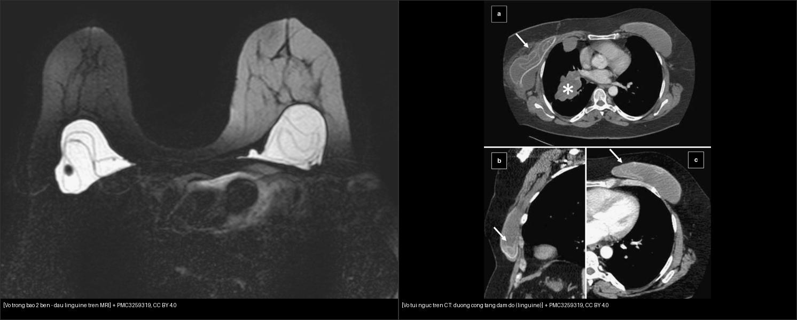
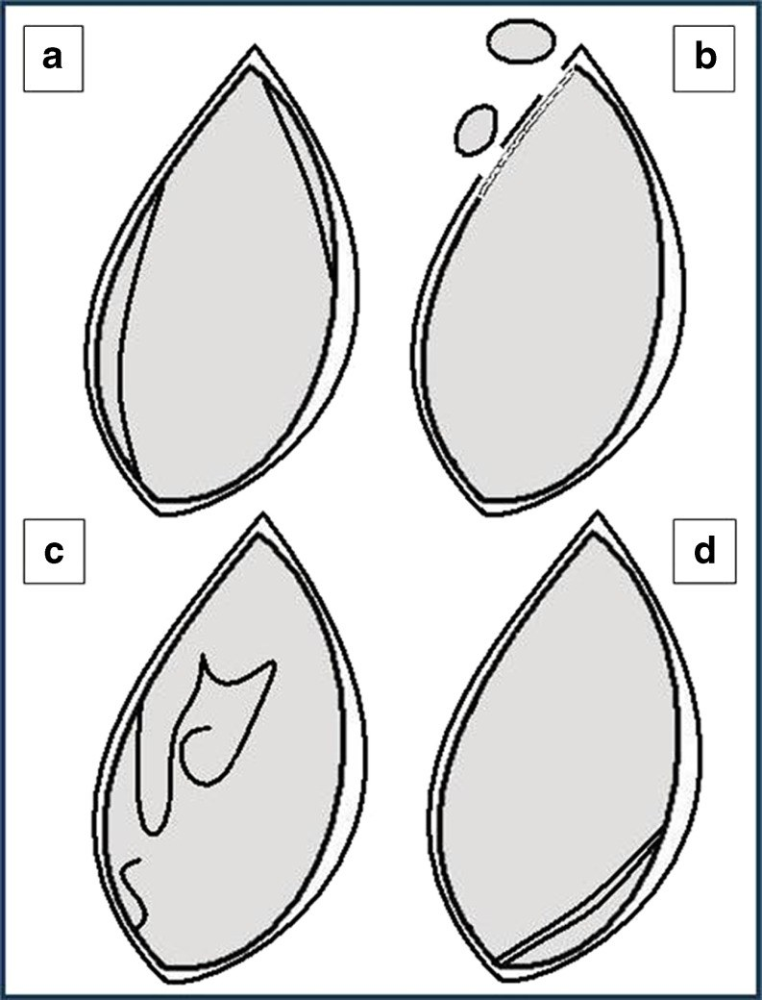
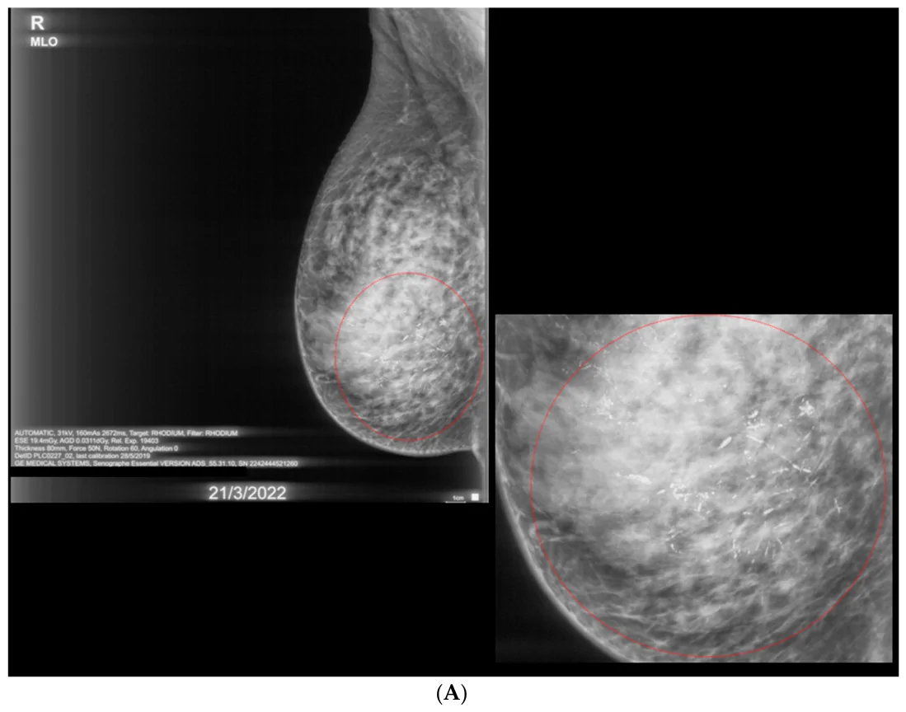
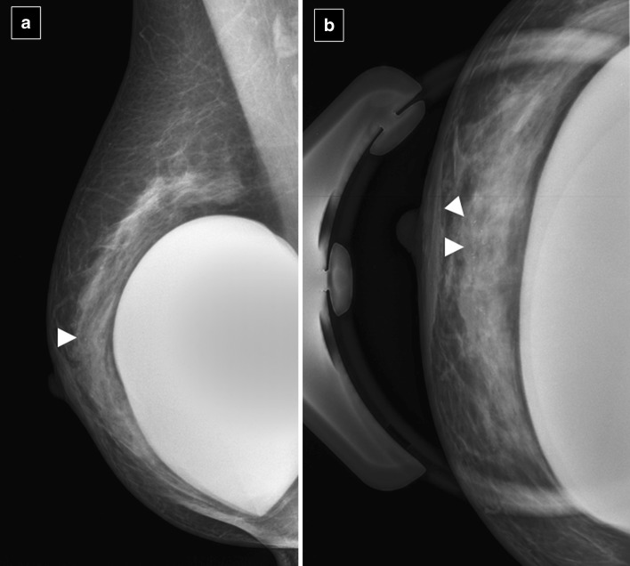
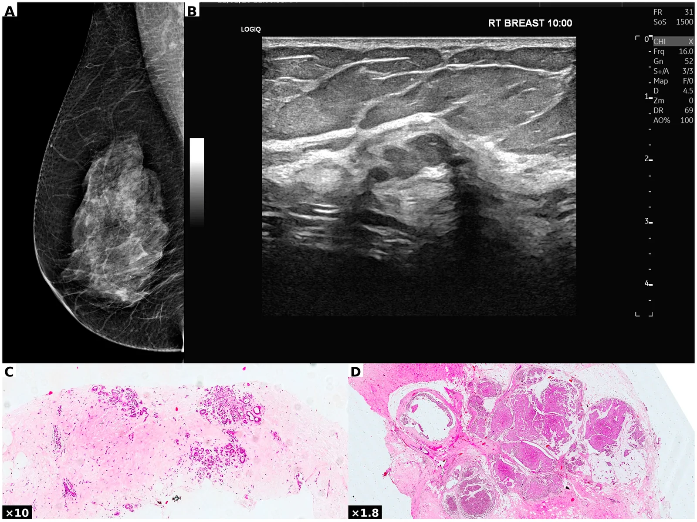

512 — Vú: vi vôi hóa, biến dạng cấu trúc & đánh giá túi ngực (implant) / Breast microcalcifications, architectural distortion & implant imaging
Tags: pattern:vi-voi-hoa pattern:bien-dang-cau-truc pattern:tui-nguc vung:vu score:BI-RADS protocol:MRI-vu
Mức chắc chắn (certainty): tổng hợp y văn (literature synthesis) — nhóm tự biên từ tổng quan có bản quyền mở (Insights Imaging 2011, Diagnostics 2026) + số liệu BI-RADS, chưa gắn một ca nguyên văn đơn lẻ.
1. Tổng quan — TẠI SAO hình thái vôi/co kéo nói lên mô bệnh
- Vi vôi hóa (microcalcifications) là canxi lắng trong lòng ống tuyến/nhu mô; vì canxi hấp thụ tia X mạnh hơn mô mềm → sáng đặc trưng trên nhũ ảnh, thường là dấu hiệu duy nhất của DCIS (ung thư biểu mô ống tại chỗ) — không sờ thấy, không thấy trên siêu âm.
- Hình thái phản ánh cơ chế: vôi do hoại tử tế bào trong lòng ống (DCIS) kết thành hạt nhỏ, không đều, men theo ống → đa hình mịn (fine pleomorphic) / mảnh–phân nhánh (fine linear branching); vôi trong mô xơ lành hoặc dịch đặc → thô đều/tròn đều, bỏng ngô.
- Ngưỡng định lượng (ACR BI-RADS 5th ed.): xếp loại theo hình thái + phân bố — vôi lành (BI-RADS 2): da, mạch máu, thô đều, tròn đều, bỏng ngô, que dài, sữa canxi, tách trà (teacup), thay đổi sau mổ, tách rời, vôi trong túi ngực. Vôi nghi ngờ: vô định hình (amorphous) ~ PPV 20% (4B), thô không đều ~ 10–20% (4B), đa hình mịn / mảnh–phân nhánh PPV cao ~ 60–95% (4C–5). Phân bố nhóm (grouped = ≥ 5 hạt trong 1 cm), tuyến tính (linear) và phân thùy (segmental) làm tăng nghi ngờ (phân thùy = theo một ống–thùy tuyến → gợi DCIS).
- Biến dạng cấu trúc (architectural distortion — AD): vùng nhu mô méo, co kéo, spicule, không có khối trung tâm đặc. Cơ chế: tổ chức xơ co kéo nhu mô → phản ứng desmoplastic của ung thư ống xâm lấn (đặc biệt ung thư tiểu thùy ILC) hoặc sẹo xơ hướng tâm (radial scar / complex sclerosing lesion — tổn thương nguy cơ B3). Trong một nghiên cứu hiện đại về sclerosing adenosis (Diagnostics 2026, n = 19 nhũ ảnh): AD là bất thường nhũ ảnh hay gặp nhất 9/19 = 47,4%; khi mổ, 28,6% nâng cấp lên B3 và 14,3% nâng cấp lên ác tính → AD phải coi là ác tính cho tới khi chứng minh ngược lại.
- Túi ngực (breast implant): MRI là chuẩn đánh giá vỏ túi — độ nhạy 80–90%, độ đặc hiệu 90–97%; nhũ ảnh kém (Se 25–30%, tối đa 68%) vì không thấy được vỏ túi nằm sau gel. TẠI SAO MRI hiệu quả: gel silicone không có proton nên tín hiệu thấp trên T1/T2 thường, nhưng chuỗi chọn lọc silicone (silicone-excited, nén nước) làm gel sáng rắng, khi đó vỏ túi gấp nếp (tối) nổi rõ trên nền gel sáng → nhận diện vỡ trong bao.
2. Mẫu hình + chẩn đoán phân biệt theo hình thái/giải phẫu (Gamut)
- Theo hình thái vôi: lành (da, bỏng ngô, tách trà, sữa canxi, que dài, mạch máu) vs nghi ngờ (vô định hình, thô không đều, đa hình mịn, mảnh–phân nhánh).
- Theo loại tổn thương phần mềm: biến dạng cấu trúc (đơn thuần hay kèm khối), bất đối xứng khu trú, khối (đã học ở bài 510).
- Theo tình trạng túi ngực: vỡ trong bao (intracapsular) vs ngoài bao (extracapsular); vỏ xơ phình (capsular contracture); xoay túi; viêm; lymphoma tế bào T liên quan túi (BIA-ALCL).
- Gợi nhớ tiếp cận "hình thái → phân bố → bối cảnh": một hạt vôi nhìn riêng vô nghĩa; cụm + hình thái + phân bố + so phim cũ mới quyết định.
3. Bảng so sánh phân biệt (ma trận đối chiếu)
| Thực thể (entity) | Hình ảnh điển hình | Chốt vào (rule-in) | Chốt loại (rule-out) | Gợi ý xác nhận |
|---|---|---|---|---|
| Vôi lành (fibroadenoma, mạch máu, da) | Bỏng ngô/thô đều, tách trà, que dài, sữa canxi, bờ đều | Bờ đều + có que/trà + ổn định nhiều năm | Hạt nhỏ đa hình trong cụm → nghi | So phim cũ; không sinh thiết |
| Vôi nghi ngờ (DCIS/ung thư) | Đa hình mịn / mảnh–phân nhánh, phân bố nhóm–tuyến tính–phân thùy | ≥ 5 hạt/1 cm + đa hình hoặc phân nhánh | Thô đều/tròn đều → lành | Nhũ ảnh phóng đại + sinh thiết kim hút chân không (VAB) dưới định vị |
| Biến dạng cấu trúc (AD) | Co kéo, spicule, không khối trung tâm | AD trên ≥ 2 bình diện (đặc biệt ILC) | Có khối trung tâm → xếp theo khối | DBT + sinh thiết; AD thường nâng cấp B3/ác |
| Sẹo xơ hướng tâm (radial scar/CSL) | AD dạng sao (spicules radiate) — giống ILC | Chẩn đoán loại trừ sau mổ (B3, cần bàn) | Lõi xơ trung tâm trên mô bệnh → lành | Mô bệnh + hội chẩn (tái phát!) |
| Vỡ túi trong bao (intracapsular) | MRI: linguine sign, dấu giọt lệ, keyhole, đường dưới vỏ, railroad track | Ảnh vỏ gấp nếp trong gel (linguine) trên chuỗi silicone | Không có ảnh vỏ trong gel → túi nguyên | MRI chọn lọc silicone; US "stepladder", CT đường cong tăng đậm độ |
| Vỡ túi ngoài bao (extracapsular) | Siliconoma/khoi gel tự do ngoài vỏ, hạch chứa silicone | Gel ngoài vỏ xơ (ra nhu mô/hạch) | Gel khu trú trong vỏ → trong bao | US "snowstorm sign"; MRI/CT khảo sát lan gel |
| BIA-ALCL (lymphoma túi) | Dịch muộn quanh túi (> 1 năm) + khối/khối phần mềm, kèm co kéo | Dịch quanh túi muộn + khối trên MRI/US | Dịch cấp sau mổ → huyết thanh bình thường | Hút dịch + hóa mô/miễn dịch (CD30+) |

Trái: MRI chuỗi silicone — vỏ túi gấp nếp (linguine) trong gel sáng ở cả hai túi bị vỡ. Phải: CT ngực — túi ngực mất hình dạng + đường cong tăng đậm độ (linguine) là dấu vỡ trên CT. Nguồn: Insights Imaging 2011 (PMC3259319), CC BY 4.0. Ảnh ghép letterbox.
*Sơ đồ kinh điển: (a) đường dưới vỏ (subcapsular line); (b) siliconoma/gel tự do (vỡ ngoài bao); (c) linguine sign — vỏ gấp nếp lượn sóng trong gel; (d) railroad track sign — hai đường song song tạo viền đôi dưới vỏ. Nguồn: Insights Imaging 2011 (PMC3259319), CC BY 4.0.*4. Protocol chụp + quy trình BI-RADS
- Nhũ ảnh (CC + MLO) ± DBT (tomosynthesis) là đầu tay; khi có vi vôi hóa → ảnh phóng đại (magnification) ± nén khu trú để đọc rõ hình thái. Siêu âm bổ trợ khối/khe nhưng kém với vi vôi hóa.
- Với túi ngực: MRI (1,5T) có coil vú, các chuỗi khóa — axial T2W, sagittal, chuỗi chọn lọc silicone (silicone-excited, nén nước) và chuỗi nén silicone (water-suppressed); không cần cản quang cho mục đích khảo sát vỏ. Siêu âm có thể xác định snowstorm (gel tự do); CT chỉ dùng khi tình cờ thấy.
- Quy trình xử trí (khung BI-RADS): vôi lành → BI-RADS 2, không làm gì; vôi nghi ngờ/nhóm–phân thùy → BI-RADS 4/5, sinh thiết (ưu tiên VAB để lấy trọn cụm vôi đủ mô bệnh); biến dạng cấu trúc → BI-RADS 4/5, sinh thiết ± mổ (AD dễ nâng cấp).
flowchart TD
A[Vi voi hoa tren nhu anh] --> B{Hinh thai: bo ngô / tron deu / que dai}
B -->|Co| C[Lanh - BI-RADS 2 - theo doi]
B -->|Khong| D{Da hinh min hoac manh phan nhanh}
D -->|Co| E[BI-RADS 4C hoac 5 - sinh thiet VAB]
D -->|Khong, vo dinh hinh hoac tho khong deu| F[BI-RADS 4B - sinh thiet]
E --> G{Phan bo nhom/tuyen tinh/phan thuy}
F --> G
G -->|Phan thuy| H[Nghi DCIS - uu tien VAB lay tron]
A2[Bien dang cau truc] --> I[Xac nhan >= 2 binh dien]
I --> J[Sinh thiet - AD de nang cap B3/ac]
A3[Tui nguc nghi vo] --> K[MRI chon loc silicon]
K -->|Vo gap nep trong gel| L[Vo trong bao - linguine]
K -->|Gel ngoai vo| M[Vo ngoai bao - siliconoma/snowstorm]
5. Biến thể bình thường và cạm bẫy
- Vôi trong da (dermal) — nằm nông, thường tròn, có tâm sáng bên trong → không sinh thiết.
- Vôi sau mổ/xạ trị hoặc sẹo xơ lành — so phim cũ là chốt; đừng chọc oan.
- Biến dạng cấu trúc chỉ thấy ở một bình diện có thể là chồng lấp nhu mô bình thường → xác nhận lại trên ≥ 2 bình diện/DBT trước khi kết luận.
- Túi ngực: gấp nếp hướng tâm bình thường ở túi mới/bề mặt xung quanh có thể giả "keyhole"; "gel bleed" (thấm gel) khác vỡ (gel ngoài vỏ xơ mới là vỡ ngoài bao). Không sinh thiết/chọc xuyên qua túi khi chưa có kế hoạch mổ.
- Satisfaction of search: đã thấy một cụm vôi rõ rồi bỏ qua biến dạng cấu trúc ở vùng khác cùng vú đối diện.
6. Tự lượng giá — Blind Quiz
Ca 1 — Nhũ ảnh MLO: cụm vôi lớn dần trong nhiều năm. Lành hay ác? Vì sao?

- Hỏi: hình thái và phân bố vôi? Sinh thiết lõi âm tính có loại trừ DCIS không? Xử trí đúng?
Bấm để hiện đáp án (findings + chẩn đoán)
- Dấu hiệu (findings): cụm vi vôi hóa đa hình, phân bố theo vùng/phân thùy, lan rộng dần theo thời gian (vòng đỏ là ảnh phóng đại).
- Chẩn đoán (diagnosis): DCIS độ cao (high-grade) pTis pN0 — 12 năm vôi tiến triển dù sinh thiết lõi nhiều lần âm tính (bỏ sót do lấy mẫu). Bài học: vôi nghi ngờ + tiến triển → cần VAB lấy trọn cụm (không phải sinh thiết lõi đơn thuần), cân nhắc mổ.
- Nguồn ảnh: Diagnostics 2026 (PMC13564617) Fig. 4A, CC BY 4.0.
Ca 2 — Bệnh nhân có túi ngực, nhũ ảnh MLO thấy một cụm sáng nhỏ bờ không đều. Đánh giá thế nào?

- Hỏi: vôi lành hay nghi? túi ngực có che lấp tổn thương không? Bước tiếp theo?
Bấm để hiện đáp án (findings + chẩn đoán)
- Dấu hiệu (findings): cụm vi vôi hóa nghi ngờ (đa hình) trong nhu mô vú, trên ảnh phóng đại rõ hơn; túi ngực silicone nằm sau.
- Chẩn đoán (diagnosis): vi vôi hóa nghi ác tính → chỉ định sinh thiết (VAB/kẹp định vị), kể cả khi có túi ngực (túi nằm dưới tuyến không ngăn sinh thiết tuyến).
- Bài học: nhũ ảnh vẫn phát hiện được vôi trong vú đặt túi; không được bỏ qua vì sợ túi che.
- Nguồn ảnh: Insights Imaging 2011 (PMC3259319) Fig. 26, CC BY 4.0.
Ca 3 — Nhũ ảnh + siêu âm: vùng méo nhu mô không có khối rõ. Chẩn đoán phân biệt và xử trí?

- Hỏi: dấu hiệu chính trên nhũ ảnh (A)? Siêu âm (B) cho thấy gì? Sinh thiết lõi lành (C) có an tâm?
Bấm để hiện đáp án (findings + chẩn đoán)
- Dấu hiệu (findings): (A) nhũ ảnh MLO — biến dạng cấu trúc (AD) vùng trên, thấy rõ trên DBT; (B) siêu âm — khối oval, phân thùy, hồi âm kém 15 × 6 mm, song song da (BI-RADS 4); (C/D) mô bệnh — ban đầu sclerosing adenosis lành, nhưng mổ xác định ung thư biểu mô nhầy xâm lấn (mucinous carcinoma) pT1a (dạng mô học hiếm, hình ảnh "hiền").
- Chẩn đoán (diagnosis): AD + khối giả lành nhưng thực chất là ung thư nhầy → mổ khi bất tương hợp X-quang–mô bệnh (radiologic–pathologic discordance). Số liệu liên quan: AD khi mổ có thể nâng cấp B3 28,6% / ác 14,3%.
- Nguồn ảnh: Diagnostics 2026 (PMC13511688) Fig. 2, CC BY 4.0.
Ca 4 — Hai nhũ ảnh/MRI của túi ngực: dấu nào chốt đã vỡ?
Bấm để hiện đáp án (findings + chẩn đoán)
- Trái (MRI chuỗi silicone): vỏ túi gấp nếp (linguine) trong gel sáng ở cả hai túi → vỡ trong bao hai bên.
- Phải (CT): túi mất hình dạng + đường cong tăng đậm độ = dấu vỡ (linguine) trên CT.
- Chốt: MRI độ nhạy 80–90%, độ đặc hiệu 90–97% cho vỡ túi; nhũ ảnh chỉ 25–30%. Phân biệt trong bao (vỏ còn, linguine) vs ngoài bao (gel ra nhu mô/hạch, "snowstorm" trên US).
- Nguồn ảnh: Insights Imaging 2011 (PMC3259319), CC BY 4.0.
Bài liên quan chéo
- 500 – Tổng quan Vú & Sản Phụ khoa
- 510 – Vú & BI-RADS: nhũ ảnh, siêu âm & MRI (khối vú, động học DCE, xếp loại BI-RADS)
- 516 – Hình ảnh vú sau điều trị: hoại tử mỡ, sẹo vs tái phát & BIA-ALCL (đọc vú đã mổ/xạ/tái tạo/túi ngực)
- 530 – Phần phụ O-RADS (hệ thống RADS phụ khoa)
- 448 – U hắc mạc (nguyên lý MRI theo bản chất mô — melanin/silicone)
Ảnh
512_vi-voi-hoa-DCIS_Mammo_PMC13564617-Fig4a-CCBY.webp— Diagnostics 2026 (PMC13564617), CC BY 4.0.512_bien-dang-cau-truc_Mammo-US_PMC13511688-Fig2-CCBY.webp— Diagnostics 2026 (PMC13511688), CC BY 4.0.512_linguine_MRI_PMC3259319-Fig6-CCBY.jpg,512_linguine-CT-CT_PMC3259319-Fig23-CCBY.jpg,512_vo-tui-nguc-dau-hieu_MRI_PMC3259319-Fig15-CCBY.jpg,512_vi-voi-hoa-tui-nguc_Mammo_PMC3259319-Fig26-CCBY.jpg— Insights Imaging 2011 (PMC3259319), CC BY 4.0.composite_tui-nguc-MRI-vs-CT.jpg— ảnh ghép letterbox từ ảnh trên.- Chi tiết giấy phép từng ảnh trong
images/CREDITS.md. AuntMinnie: chỉ dẫn link, không tải.
Không dùng để chẩn đoán độc lập khi chưa có người hướng dẫn.